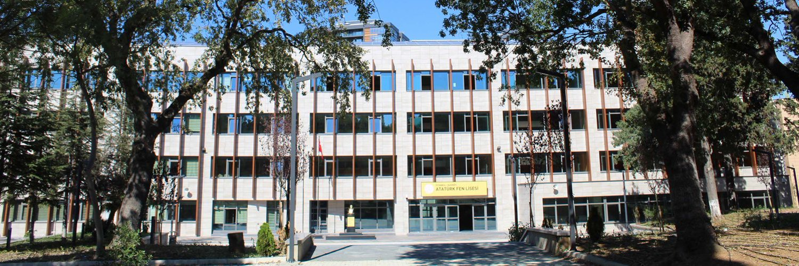
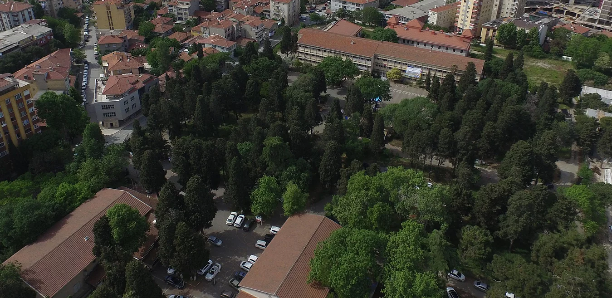

İstanbul Atatürk Fen Lisesi
This website is prepared as a demonstration for a homework.
İstanbul Atatürk Highschool of Science
İstanbul Atatürk Highschool of Science is an educational institution located in Kuyubaşı, Kadıköy. This school gives its student advanced science education. For nearly four decades, this school graduated Turkey's most succesful scientists and business people

Drone image of the campus taken before boys dormitory built and the main building reconstructed.